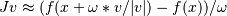

scipy.optimize.newton_krylov¶
- scipy.optimize.newton_krylov(F, xin, iter=None, rdiff=None, method='lgmres', inner_maxiter=20, inner_M=None, outer_k=10, verbose=False, maxiter=None, f_tol=None, f_rtol=None, x_tol=None, x_rtol=None, tol_norm=None, line_search='armijo', callback=None, **kw)[source]¶
Find a root of a function, using Krylov approximation for inverse Jacobian.
This method is suitable for solving large-scale problems.
Parameters : F : function(x) -> f
Function whose root to find; should take and return an array-like object.
x0 : array_like
Initial guess for the solution
rdiff : float, optional
Relative step size to use in numerical differentiation.
method : {‘lgmres’, ‘gmres’, ‘bicgstab’, ‘cgs’, ‘minres’} or function
Krylov method to use to approximate the Jacobian. Can be a string, or a function implementing the same interface as the iterative solvers in scipy.sparse.linalg.
The default is scipy.sparse.linalg.lgmres.
inner_M : LinearOperator or InverseJacobian
Preconditioner for the inner Krylov iteration. Note that you can use also inverse Jacobians as (adaptive) preconditioners. For example,
>>> jac = BroydenFirst() >>> kjac = KrylovJacobian(inner_M=jac.inverse).
If the preconditioner has a method named ‘update’, it will be called as update(x, f) after each nonlinear step, with x giving the current point, and f the current function value.
inner_tol, inner_maxiter, ...
Parameters to pass on to the “inner” Krylov solver. See scipy.sparse.linalg.gmres for details.
outer_k : int, optional
Size of the subspace kept across LGMRES nonlinear iterations. See scipy.sparse.linalg.lgmres for details.
iter : int, optional
Number of iterations to make. If omitted (default), make as many as required to meet tolerances.
verbose : bool, optional
Print status to stdout on every iteration.
maxiter : int, optional
Maximum number of iterations to make. If more are needed to meet convergence, NoConvergence is raised.
f_tol : float, optional
Absolute tolerance (in max-norm) for the residual. If omitted, default is 6e-6.
f_rtol : float, optional
Relative tolerance for the residual. If omitted, not used.
x_tol : float, optional
Absolute minimum step size, as determined from the Jacobian approximation. If the step size is smaller than this, optimization is terminated as successful. If omitted, not used.
x_rtol : float, optional
Relative minimum step size. If omitted, not used.
tol_norm : function(vector) -> scalar, optional
Norm to use in convergence check. Default is the maximum norm.
line_search : {None, ‘armijo’ (default), ‘wolfe’}, optional
Which type of a line search to use to determine the step size in the direction given by the Jacobian approximation. Defaults to ‘armijo’.
callback : function, optional
Optional callback function. It is called on every iteration as callback(x, f) where x is the current solution and f the corresponding residual.
Returns : sol : ndarray
An array (of similar array type as x0) containing the final solution.
Raises : NoConvergence
When a solution was not found.
Notes
This function implements a Newton-Krylov solver. The basic idea is to compute the inverse of the Jacobian with an iterative Krylov method. These methods require only evaluating the Jacobian-vector products, which are conveniently approximated by numerical differentiation:

Due to the use of iterative matrix inverses, these methods can deal with large nonlinear problems.
Scipy’s scipy.sparse.linalg module offers a selection of Krylov solvers to choose from. The default here is lgmres, which is a variant of restarted GMRES iteration that reuses some of the information obtained in the previous Newton steps to invert Jacobians in subsequent steps.
For a review on Newton-Krylov methods, see for example [KK], and for the LGMRES sparse inverse method, see [BJM].
References
[KK] (1, 2) D.A. Knoll and D.E. Keyes, J. Comp. Phys. 193, 357 (2003). [BJM] (1, 2) A.H. Baker and E.R. Jessup and T. Manteuffel, SIAM J. Matrix Anal. Appl. 26, 962 (2005).